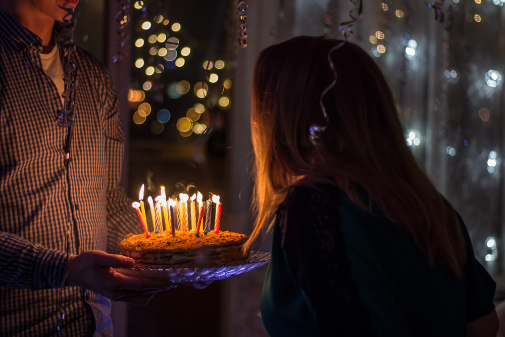
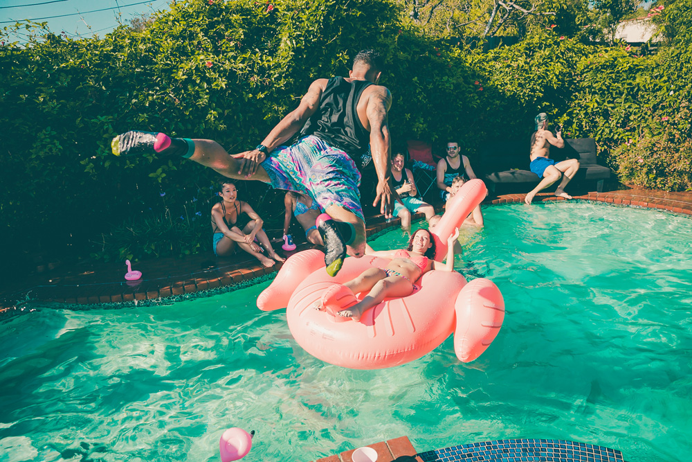

¿Se acerca tu cumpleaños y aun no sabes como lo vas a celebrar? ¿Te apetece preparar algo divertido y original? No te preocupes, desde la @masiacanborrell te damos unas cuantas ideas para que tu fiesta sea todo un éxito.
Tipos de fiesta originales
Fiesta de disfraces
Las fiestas de disfraces son una buena excusa para pasar un buen rato entre amigos o familia. En este tipo de fiestas los invitados pueden elegir su disfraz libremente, eso puede ser muy divertido. La decoración es un elemento muy importante, debes conseguir crear un ambiente divertido y de fiesta. Pero, el papel principal de este evento son los disfraces, por eso hay que asegurarse de que todos nuestros invitados estén dispuestos a disfrazarse y disfrutar.

Fiesta familiar
En las fiestas familiares el objetivo es disfrutar de momentos divertidos con todos los miembros de la familia. Para eso, se pueden preparar juegos que unan a todas las generaciones: juegos de mesa como el monopoly, cartas o el trivial, se pueden montar concursos de baile o karaoke para bailar y cantar todos juntos, incluso se pueden preparar juegos tradicionales como el pañuelo o las sillas musicales. Para que sea una buena fiesta familiar, no pueden faltar una buena comida y un rico pastel para endulzar la velada.
Fiesta temática
En las fiestas temáticas lo más importante es la decoración. Hay fiestas temáticas de todo tipo, hippies, de playa, mexicanas etc. Para celebrar este tipo de fiesta se debe ambientar el lugar dónde se celebra el evento con todo tipo de detalles. También podemos pedir a los invitados que lleven algún tipo de accesorio o prepararles algún regalo para que, de esta manera, puedan seguir la línea de la fiesta. Por ejemplo, si preparamos una fiesta hippie podemos preparar cintas para el pelo de flores, si preparamos una fiesta de playa podemos pedirles que traigan ropa de baño o si nos decidimos a hacer una fiesta mexicana podemos comprar gorros mexicanos.

Pool party
Para celebrar una ‘pool party’, necesitamos una gran piscina. La decoración debe ser veraniega y debemos asegurarnos de que todos nuestros invitados traigan ropa de baño para que puedan bañarse y disfrutar de un día inolvidable de piscina. Para que la fiesta sea un éxito no pueden faltar flotadores, pelotas, cartas y todo tipo de juegos veraniegos.
Pasos que debes seguir para que tu fiesta sea un éxico
Da igual el tipo de fiesta que decidas organizar aquí te dejamos una lista de las cosas que deberás cumplir si quieres que todo salga a la perfección.
- Prepara tu fiesta con antelación
- Envía las invitaciones 1 mes antes del evento
- Dedícale tiempo a la decoración
- Contrata un buen catering o prepara una buena comida
- Asegúrate de tener un photocall con atrezzo y pizarras con mensajes
- Hazte con un pastel original
- Prepara juegos, actividades y yincanas
- Prepara la música o contrata un DJ
- Haz fotos o contrata a un fotógrafo
- Pide ayuda para recoger o contrata personal de limpieza
Con estos consejos seguro que tu fiesta será todo un éxito. Si aun no sabes donde celebrar tu fiesta
No lo dudes más y contacta con nosotros.